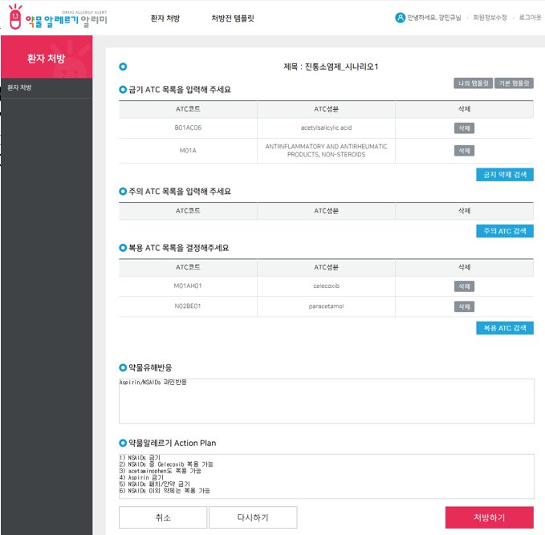
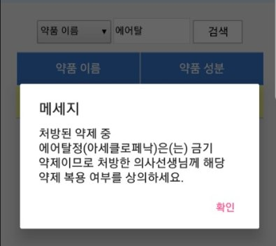
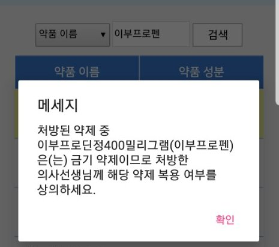
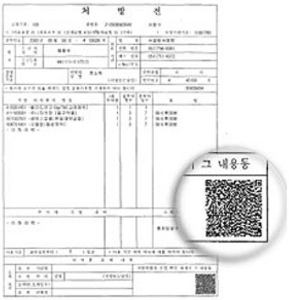

약물알레르기 알리미앱 · 2018년부터
소개 영상 2분 · 내레이션과 자막
약물 알레르기는 환자마다 다르게 나타납니다. 같은 진통소염제 알레르기라도 어떤 환자에게는 괜찮은 약이 다른 환자에게는 위험할 수 있어서, 환자가 약국이나 병원에서 스스로 판단하기는 어렵습니다. '약물 알레르기 알리미'는 대학병원 알레르기내과에서 진단받은 환자의 금기약제, 주의약제, 복용가능약제 정보를 앱에 담아, 약 이름이나 처방전 QR 코드를 그 정보와 대조해 보여 주는 안드로이드 앱입니다. 전문의가 환자마다 등록한 정보가 근거라서 같은 약도 환자에 따라 다른 답이 나옵니다.
30초 시연 영상
주요 기능

의료진이 등록하는 환자별 알레르기 정보
알레르기내과 진료에서 확인한 금기약제, 주의약제, 복용가능약제를 ATC 코드 단위로 등록하고 환자별 액션 플랜까지 함께 저장합니다. 앱이 보여 주는 모든 답은 이 정보를 근거로 합니다.

모바일 의약품안전카드
병원에서 종이로 발급하던 의약품안전카드를 앱 화면에 그대로 옮겼습니다. 원인 약물과 금기, 주의, 복용 가능 약제를 한 화면에 담아 다른 병원이나 약국에서 보여 주기만 하면 됩니다.
약물알레르기 액션 플랜
환자가 지켜야 할 수칙을 번호를 매긴 문장으로 풀어서 안내합니다. 진통소염제는 패치와 안약까지 피하되 셀레콕시브와 아세트아미노펜은 복용할 수 있다는 식으로 알려 줍니다.

약 이름으로 즉시 확인
약품명이나 성분명을 검색하면 그 약을 먹어도 되는지 곧바로 답합니다. 금기 약제일 때는 처방한 의사와 상의하라는 안내까지 함께 보여 줍니다.

같은 약이라도 환자에 따라 다른 답
모든 진통소염제에 교차반응을 보이는 환자가 이부프로펜을 검색하면 위험하다고 경고합니다.

다른 환자에게는 같은 약이 안전
디클로페낙 계열에만 반응하는 환자가 똑같이 이부프로펜을 검색하면 안전하게 복용할 수 있다고 답합니다. 환자마다 답이 달라진다는 점이 이 앱의 핵심입니다.

처방전 QR 코드 스캔
처방전 하단의 QR 코드를 찍으면 처방된 약을 한 번에 대조해 알레르기 위험 약제가 들어 있는지 자동으로 확인합니다. 유비케어와 이디비의 기술 협조로 구현한 기능입니다.
2018 스마트앱어워드 건강·의료 분야 최우수상
스마트앱어워드는 한국인터넷전문가협회가 주최하는 국내 최대 규모의 모바일 앱 시상식입니다. 한 해 동안 새로 개발된 앱을 대상으로 인터넷 전문가 3,000명으로 구성된 평가위원단이 분야별 우수작을 가립니다. 2018년 12월 6일 시상식에서 충북대학교병원 알레르기내과 강민규 교수팀이 건강/의료 분야 최우수상을 받았습니다. 보도자료는 환자가 자신의 약물 알레르기 정보를 등록해 두면 특정 약을 먹었을 때 위험이 있는지 실시간으로 검색할 수 있고, 병원 처방전을 촬영하는 것만으로 위험 약제가 포함되어 있는지 확인할 수 있다는 점을 이 앱의 성과로 설명합니다.
사용자 리뷰 Google Play, 이름은 가렸습니다
앱 소개 자료에서
- 봉침을 맞고 사망한 아나필락시스 사례처럼, 중증 약물 알레르기 환자는 약을 잘못 복용하면 알레르기 쇼크로 사망에 이를 수 있습니다.
- 약물 알레르기는 환자마다 달라서, 같은 진통소염제 알레르기라도 어떤 환자는 A약이 괜찮고 다른 환자는 B약만 복용할 수 있습니다.
- 그래서 약을 잘못 먹고 사고가 나는 경우도 있고, 반대로 위험이 두려워 꼭 필요한 약을 복용하지 못하는 경우도 생깁니다.
- 이 앱은 대학병원 알레르기내과에서 진단받은 환자의 금기약제, 주의약제, 복용가능약제와 특정 약을 대조해 어디에 해당하는지 보여 줍니다.
- 환자마다 전문의가 등록한 정보가 근거라서 같은 약도 환자에 따라 다른 답이 나옵니다.
- 병원별로 종이로 발급하던 의약품안전카드의 내용을 앱에 그대로 구현했습니다.